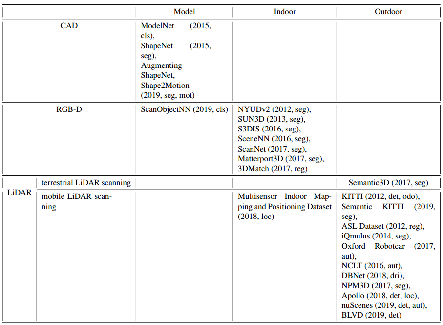

<!DOCTYPE html>
<html lang="en" class="loading">
<head>
    <meta charset="UTF-8" />
    <meta http-equiv="X-UA-Compatible" content="IE=edge,chrome=1" />
    <meta name="viewport" content="width=device-width, minimum-scale=1.0, maximum-scale=1.0, user-scalable=no">
    <title>【转载】三维数据集整理 - Kasvii Blog</title>
    <meta name="apple-mobile-web-app-capable" content="yes" />
    <meta name="apple-mobile-web-app-status-bar-style" content="black-translucent">
    <meta name="google" content="notranslate" />
    <meta name="keywords" content="kasvii,"> 
    <meta name="description" content="写在前面毕设需要用到视频序列的三维数据集，刚好看到一篇文章做了整理，就转了过来。
《Review: deep learning on 3D point clouds》https://arxiv.or,"> 
    <meta name="author" content="kasvii"> 
    <link rel="alternative" href="atom.xml" title="Kasvii Blog" type="application/atom+xml"> 
    <link rel="icon" href="/img/favicon.png"> 
    
<link rel="stylesheet" href="//cdn.jsdelivr.net/npm/gitalk@1/dist/gitalk.css">

    
<link rel="stylesheet" href="/css/diaspora.css">

	<script async src="//pagead2.googlesyndication.com/pagead/js/adsbygoogle.js"></script>
    <script>
         (adsbygoogle = window.adsbygoogle || []).push({
              google_ad_client: "ca-pub-8691406134231910",
              enable_page_level_ads: true
         });
    </script>
    <script async custom-element="amp-auto-ads"
        src="https://cdn.ampproject.org/v0/amp-auto-ads-0.1.js">
    </script>
<meta name="generator" content="Hexo 5.2.0"></head>

<body class="loading">
    <span id="config-title" style="display:none">Kasvii Blog</span>
    <div id="loader"></div>
    <script type="text/javascript" src="/js/clicksakura.js"></script>
    <script async src="/js/sakurafall.js"></script>
    <div id="single">
    <div id="top" style="display: block;">
    <div class="bar" style="width: 0;"></div>
    <a class="iconfont icon-home image-icon" href="javascript:;" data-url="https://kasvii.github.io"></a>
    <div title="播放/暂停" class="iconfont icon-play"></div>
    <h3 class="subtitle">【转载】三维数据集整理</h3>
    <div class="social">
        <div>
            <div class="share">
                <a title="获取二维码" class="iconfont icon-scan" href="javascript:;"></a>
            </div>
            <div id="qr"></div>
        </div>
    </div>
    <div class="scrollbar"></div>
</div>

    <div class="section">
        <div class="article">
    <div class='main'>
        <h1 class="title">【转载】三维数据集整理</h1>
        <div class="stuff">
            <span>三月 02, 2021</span>
            
  <ul class="post-tags-list" itemprop="keywords"><li class="post-tags-list-item"><a class="post-tags-list-link" href="/tags/%E5%AE%9E%E4%BE%8B%E5%88%86%E5%89%B2/" rel="tag">实例分割</a></li><li class="post-tags-list-item"><a class="post-tags-list-link" href="/tags/%E6%95%B0%E6%8D%AE%E9%9B%86/" rel="tag">数据集</a></li><li class="post-tags-list-item"><a class="post-tags-list-link" href="/tags/%E6%B7%B1%E5%BA%A6%E5%AD%A6%E4%B9%A0/" rel="tag">深度学习</a></li></ul>


        </div>
        <div class="content markdown">
            <h2 id="写在前面"><a href="#写在前面" class="headerlink" title="写在前面"></a>写在前面</h2><p>毕设需要用到视频序列的三维数据集，刚好看到一篇文章做了整理，就转了过来。</p>
<p>《Review: deep learning on 3D point clouds》<a target="_blank" rel="noopener" href="https://arxiv.org/pdf/2001.06280.pdf">https://arxiv.org/pdf/2001.06280.pdf</a></p>
<h2 id="基准数据集"><a href="#基准数据集" class="headerlink" title="基准数据集"></a>基准数据集</h2><p>  近年来，已经发表了大量的点云数据集。现有的大部分数据集都是由大学和行业提供的。它们可以为测试各种方法提供一个公平的比较。这些公共基准数据集由虚拟场景或真实场景组成，其重点在于特别是在点云分类、分割、检索方面和目标检测。它们用深度学习方法特别有用，因为它们可以为训练网络提供大量的真实标签。点云可以通过不同的平台/方法获得，如Structure from Motion (SfM)、红绿蓝-深度(RGB-D)相机和光探测和测距（LiDAR）系统。随着大小和复杂程度增加，基准数据集的可用性通常会降低。在本节中，我们将介绍一些流行的用于3D研究的数据集。</p>
<h3 id="3D模型数据集"><a href="#3D模型数据集" class="headerlink" title="3D模型数据集"></a>3D模型数据集</h3><p><strong>ModelNet [13]：</strong>该数据集由普林斯顿大学视觉与机器人实验室开发。ModelNet40有40个人造物体形状的类别（如飞机、书架和椅子）用于分类和识别。它由12311个CAD模型组成。其中分为9,843个训练和2,468个测试形状。ModelNet10数据集是ModelNet40的一个子集，该子集包括只包含10个类别。它还分为3991个训练和908个测试形状。</p>
<p><strong>ShapeNet [48]：</strong>大规模数据集是由斯坦福大学等人开发，它提供了每个模型的语义类别标签，固定的走线、部件和双边对称性平面、物理尺寸、关键词，以及其他计划中的注解。ShapeNet已经为近3,000,000个模型编制了索引。当数据集公布后，有22万个模型被分为3135个类别。ShapeNetCore是ShapeNet的一个子集，其中包括近51,300个独特的3D模型。它提供了55个常见的对象类别和注释。ShapeNetSem也是ShapeNet的一个子集，它包含有12,000个模型。它的规模更小，但覆盖面更广，包括270类。</p>
<p><strong>Augmenting ShapeNet：</strong>[49]创建了详细的部件标签为来自ShapeNetCore数据集的31963个模型提供服务。它提供了16个形状类别进行部件分割。[50]已经提供了1200个来自ShapeNet数据集的虚拟局部模型。[51]提出了一种自动生成逼真3D形状的方法，它是建立在ShapeNetCore数据集。[52]是一个具有细粒度和层次性的部件注释的大规模数据集，它包括24个对象类别和26,671个三维模型，提供了573,585个部件实例标签。[53]贡献了一个大规模的3D物体识别数据集。该数据集有100个类别，其中包括有201,888个对象（来自ImageNet[54]）的90,127张图像和44,147个3D形状（来自ShapeNet）。</p>
<p><strong>Shape2Motion [55]：</strong>Shape2Motion是由北航和国防科技大学开发的。它已经创建了一个新的基准数据集，用于3D形状流动性分析。该基准包括45个形状类别与2440个模型，其中的形状是来自于ShapeNet和3D仓库[56]。所提出的方法输入单一的3D形状，然后预测运动部件的分割结果和运动对应的共同属性。</p>
<p><strong>ScanObjectNN [57]：</strong>ScanObjectNN是由香港科技大学等单位提出，是第一个点云分类的真实世界数据集。约15,000对象是从室内数据集选择出的（SceneNN[58]和ScanNet[30]）。 并将对象分为15类，其中有2902个唯一的对象实例。</p>
<h3 id="3D室内数据集"><a href="#3D室内数据集" class="headerlink" title="3D室内数据集"></a>3D室内数据集</h3><p><strong>NYUDv2 [59]：</strong>纽约大学深度数据集v2（NYUDv2）是由纽约大学等人开发的。该数据集提供了从464个各种室内场景中捕捉到的1449张RGB-D（由Kinect v1获得）图像。所有的图像是分布式分割标签。这个数据集主要是有助于了解3D线索对于室内物体如何产生更好的分割。</p>
<p><strong>SUN3D [60]：</strong>该数据集由普林斯顿大学开发。这是一个RGB-D视频数据集，其中的视频是从41栋建筑的254个不同空间中捕捉到的。SUN3D提供了415个带有摄像机姿势和物体标签的序列。点云是由运动结构(SfM)生成的。</p>
<p><strong>S3DIS [61]：</strong>斯坦福大学3D大型室内空间（S3DIS）是由斯坦福大学等人开发的，S3DIS是从3栋不同的建筑物271个房间中收集到的数据。覆盖面积在6000平方米以上。它包含超过2.15亿点，并且每个点都提供了实例级语义分割标签（13个类别）；</p>
<p><strong>SceneNN [58]：</strong>新加坡科技与设计大学等人开发了这个数据集。SceneNN是一个RGB-D（获得Kinect v2)场景数据集，它收集了101个室内场景的数据。<br>  它为室内场景提供了40个语义类，并且所有的语义标签与NYUDv2数据集相同。</p>
<p><strong>ScanNet [30]：</strong>ScanNet是一个大尺度的室内数据集，它的开发目的是为了让人们能够更清楚地了解自己的生活。由斯坦福大学等人拍摄，包含1513个扫描场景。包括近2.5M的RGB-D（由 Occipital Structure公司获得传感器）图像，来自707个不同的室内环境。该数据集为三维物体分类提供了地面真实标签。17个类别，语义分割有20个类别类别：<br>  对于对象分类，ScanNet将所有的实例划分为9,677个实例用于训练，2,606个实例用于测试。而且ScanNet将所有扫描分成1201个训练场景和312个测试场景进行语义分割。</p>
<p><strong>Matterport3D [62]：</strong>Matterport3D是普林斯顿大学等人开发的最大的室内数据集。的。该数据集的覆盖面积面积为来自2056个房间的219,399mm2，，建筑面积为46,561mm2。它包括10,800个全景视图，其中视图来自90大型建筑的194,400张RGB-D图像。标签包含表面重建、摄像机姿势和语义分割。这个数据集研究现场理解的5个任务，分别是关键点匹配、视图重叠预测、表面法线估计、区域类型分类，以及语义分割。</p>
<p><strong>3DMatch [63]：</strong>这个基准数据集是由普林斯顿大学等，它是现有数据集的一个大集合。，如Analysisby-Synthesis[64]、7-cenes[65]。SUN3D[60]、RGB-D Scenes v.2[66]和Halber等人[67]。3DMatch基准由62个场景组成，分别为54个训练场景和8个测试场景。它利用对应标签从RGB-D场景重建数据集，然后提供点云检索的地面真相标签。</p>
<p><strong>Multisensor Indoor Mapping and Positioning Dataset [68]：</strong>这个室内数据集（房间、走廊和室内停车场）是由厦门大学等人开发的。由多传感器获得，如激光扫描仪、摄像头、WIFI、蓝牙和IMU。该数据集提供了密集的激光扫描点云进行室内测绘和定位。同时。他们还提供基于多传感器校准的彩色激光扫描和SLAM映射过程。</p>
<h3 id="3D室外数据集"><a href="#3D室外数据集" class="headerlink" title="3D室外数据集"></a>3D室外数据集</h3><p><strong>KITTI [69] [70]：</strong>KITTI数据集是在自动驾驶领域最著名的数据之一。它是由卡尔斯鲁厄理工学院等开发的，可用于立体图像、光流估计、三维检测的研究、三维跟踪、视觉测距等。数据采集平台配备了两台彩色摄像机，两台灰度相机，一台Velodyne HDL-64E 3D激光扫描仪和一个高精度的GPS/IMU系统。KITTI提供原始数据有道路、城市、住宅、校园和人等五类。深度完成和预测基准包括93000多张深度图。3D物体检测基准包含7481个训练点云和7518个测试点云。视觉测距基准由22个序列组成，有11个序列（00-10）激光雷达数据进行训练和11序列（11-21）激光雷达数据进行测试。同时，最近发表了Kitti里程数据集的语义标注[71]。SemanticKITTI包含28个类，包括地、建筑、车辆、自然、人、物等。</p>
<p><strong>ASL Dataset [72]：</strong>这组数据集是由苏黎世联邦理工学院收集于2011年8月之间至2012年1月。它提供了由北洋UTM-30LX获得的8个点云序列。每个序列约有35次扫描点云和由GPS/INS系统支持的真实姿势。该数据集涵盖了结构化和非结构化环境的领域。<br>iQmulus [73]：由Mines ParisTech等于2013年1月开发了大规模城市场景数据集。整个3D点云已被分类并划分为50个类。数据是由StereopolisII MLS收集的，该系统是法国国家测绘局（IGN）开发的一个系统。他们使用Riegl LMS-Q120i传感器采集3亿个点。</p>
<p><strong>Oxford Robotcar [74]：</strong>这个数据集是由牛津大学开发的。它由2014年5月至2015年12月期间穿过牛津市中心的大约100次轨迹组成(共101,046公里的轨迹)。这一长期数据集捕捉到了许多具有挑战性的环境变化，包括季节、天气、交通等等。而数据集既提供了图像、激光雷达点云、全球定位系统和用于自动汽车的INS地面实况。LIDRA的数据是由两个SICK LMS-151 2D激光雷达扫描仪和一台SICK LD-MRS 3D激光雷达扫描仪获得。<br>NCLT [75]：它是由密歇根大学开发的。它含有27次于2012年1月至2013年4月期间通过密歇根大学北校区的轨迹。该数据集还提供了图像、激光雷达、全球定位系统和用于长期自动汽车的INS地面数据。LiDRA点云是由Velodyne-32激光雷达扫描仪收集的。</p>
<p><strong>Semantic3D [76]：</strong>由苏黎世联邦理工学院开发了高质量和高密度的数据集。它包含了超过40亿的采集点云的点位，通过静态地面观测获得。激光扫描仪提供了8个语义类，其中由人工地形、自然地形、高植被、低植被、建筑物、硬地貌、扫描文物和汽车等组成。而数据集被分为15个训练场景和15个测试场景。</p>
<p><strong>DBNet [77]：</strong>这个真实世界的LiDAR-视频数据集是由厦门大学等单位开发的，旨在学习驾驶策略，因此它与以往的户外数据集不同。DBNet提供激光雷达点云、视频记录、GPS和用于进行驾驶行为研究的驾驶员行为。它包含了1,000公里的被Velodyne激光器采集的驾驶数据。</p>
<p><strong>NPM3D [78]：</strong> NPM3D数据集是由PSL研究大学开发的。它是一个点云分类和分割的基准。所有的点云都被标记为50个不同的类别。它包含了在巴黎和里尔收集的1431万个点数据。该数据是由包括Velodyne HDL-32E激光雷达和GPS/INS系统的移动激光系统采集的。</p>
<p><strong>Apollo [79] [80]：</strong>Apollo是由百度研究开发的。它是一个大规模的自动驾驶数据集。它提供三维汽车实例理解的标签数据、激光雷达点云物体的检测和跟踪，以及基于激光雷达的定位。对于3D汽车实例理解任务，有5277张图片，6万多辆汽车实例。每辆车都有一个工业级的CAD模型。3D物体检测和跟踪基准数据集包含53分钟的训练序列和50分钟测试序列。它是在帧率为10fps/秒，标注的帧率为2fps/秒的情况下采集的。阿波罗-南湾数据集（Apollo-SouthBay dataset）提供了关于定位任务的激光雷达帧数据。它是在旧金山湾南部采集的。他们在标准林肯MKZ轿车上配备了高端的自动驾驶传感器装备(Velodyne HDL-64E、NovAtel ProPak6和IMU-ISA-100C)。</p>
<p><strong>nuScenes [81]：</strong>nuTonomy场景(nuScenes)数据集提出了一种新的三维物体检测指标，它是由nuTonomy（APTIV公司）提供。该指标由多个方面组成，分别是分类、速度、大小、定位、方向，以及对象的属性估计。这数据集是由自主车辆传感器装备在360度视野下获取的（ 6个摄像机、5个雷达和1个激光雷达）。它包含从波士顿和新加坡收集的1000个驾驶场景。其中，两座城市都是交通堵塞。在这个数据集中的对象有23个类和8个属性，它们都是标有三维边界框。</p>
<p><strong>BLVD [82]：</strong>该数据集由西安交通大学开发。并被收藏在常熟（中国）。它介绍了一个新的基准，它专注于动态4D对象跟踪、5D交互式事件识别和5D意图预测。BLVD数据集由654个视频片段组成，其中视频为120k帧，帧率为10fps/秒。所有的帧都是被注释，获得了249129个3D注释。有总共4 902个特定的跟踪对象，6 004个交互式事件识别片段，以及4900个对象用于意图预测。</p>
<p></p>
<p>表1：基准数据集的分类（cls:分类，seg:分割，loc:定位，reg:配准，aut:自动驾驶，det:目标检测，dri:驾驶行为，mot:运动估计，odo:里程计）</p>
<h2 id="参考文献"><a href="#参考文献" class="headerlink" title="参考文献"></a>参考文献</h2><p>[13] Z. Wu, S. Song, A. Khosla, F. Yu, L. Zhang, X. Tang, J. Xiao, 3d shapenets: A deep representation for volumetric shapes, in: IEEE Conference on Computer Vision and Pattern Recognition, CVPR 2015, Boston, MA, USA, June 7-12, 2015, IEEE Computer Society, 2015, pp. 1912–1920. URL: <a target="_blank" rel="noopener" href="https://doi.org/10.1109/CVPR.2015.7298801">https://doi.org/10.1109/CVPR.2015.7298801</a>. doi:10.1109/CVPR. 2015.7298801.</p>
<p>[30] A. Dai, A. X. Chang, M. Savva, M. Halber, T. Funkhouser, M. Nießner, Scannet: Richly-annotated 3d reconstructions of indoor scenes, in: Proc. Computer Vision and Pattern Recognition (CVPR), IEEE, 2017.</p>
<p>[48] A. X. Chang, T. A. Funkhouser, L. J. Guibas, P. Hanrahan, Q. Huang, Z. Li, S. Savarese, M. Savva, S. Song, H. Su, J. Xiao, L. Yi, F. Yu, Shapenet: An informationrich 3d model repository, CoRR abs/1512.03012 (2015). URL: <a target="_blank" rel="noopener" href="http://arxiv.org/abs/1512.03012">http://arxiv.org/abs/1512.03012</a>. arXiv:1512.03012.</p>
<p>[49] L. Yi, V. G. Kim, D. Ceylan, I. Shen, M. Yan, H. Su, C. Lu, Q. Huang, A. Sheffer, L. Guibas, et al., A scalable active framework for region annotation in 3d shape collections, ACM Transactions on Graphics (TOG) 35 (2016) 210.</p>
<p>[50] A. Dai, C. R. Qi, M. Nießner, Shape completion using 3d-encoder-predictor cnns and shape synthesis, in: Proc. Computer Vision and Pattern Recognition (CVPR), IEEE, 2017.</p>
<p>[51] K. Park, K. Rematas, A. Farhadi, S. M. Seitz, Photoshape: Photorealistic materials for large-scale shape collections, ACM Trans. Graph. 37 (2018).</p>
<p>[52] K. Mo, S. Zhu, A. X. Chang, L. Yi, S. Tripathi, L. J. Guibas, H. Su, PartNet: A large-scale benchmark for fine-grained and hierarchical part-level 3D object understanding, in: The IEEE Conference on Computer Vision and Pattern Recognition (CVPR), 2019.<br>[53] Y. Xiang, W. Kim, W. Chen, J. Ji, C. Choy, H. Su, R. Mottaghi, L. Guibas, S. Savarese, Objectnet3d: A large scale database for 3d object recognition, in: European Conference Computer Vision (ECCV), 2016.</p>
<p>[54] J. Deng, W. Dong, R. Socher, L.-J. Li, K. Li, L. Fei-Fei, Imagenet: A large-scale hierarchical image database, in: 2009 IEEE conference on computer vision and pattern recognition, Ieee, 2009, pp. 248–255.</p>
<p>[55] X. Wang, B. Zhou, Y. Shi, X. Chen, Q. Zhao, K. Xu, Shape2motion: Joint analysis of motion parts and attributes from 3d shapes, in: CVPR, 2019, p. to appear.</p>
<p>[56] 3d warehouse, ???? URL: <a target="_blank" rel="noopener" href="https://3dwarehouse.sketchup.com/">https://3dwarehouse.sketchup.com/</a>.</p>
<p>[57] M. A. Uy, Q.-H. Pham, B.-S. Hua, D. T. Nguyen, S.K. Yeung, Revisiting point cloud classification: A new benchmark dataset and classification model on real-world data, in: International Conference on Computer Vision (ICCV), 2019.</p>
<p>[58] B.-S. Hua, Q.-H. Pham, D. T. Nguyen, M.-K. Tran, L.-F. Yu, S.-K. Yeung, Scenenn: A scene meshes dataset with annotations, in: International Conference on 3D Vision (3DV), 2016.</p>
<p>[59] N. Silberman, D. Hoiem, P. Kohli, R. Fergus, Indoor segmentation and support inference from rgbd images, in: European Conference on Computer Vision, Springer, 2012, pp. 746–760.</p>
<p>[60] J. Xiao, A. Owens, A. Torralba, Sun3d: A database of big spaces reconstructed using sfm and object labels, in: Proceedings of the IEEE International Conference on Computer Vision, 2013, pp. 1625–1632.</p>
<p>[61] I. Armeni, O. Sener, A. R. Zamir, H. Jiang, I. K. Brilakis, M. Fischer, S. Savarese, 3d semantic parsing of large-scale indoor spaces, in: 2016 IEEE Conference on Computer Vision and Pattern Recognition, CVPR 2016, Las Vegas, NV, USA, June 27-30, 2016, IEEE Computer Society, 2016, pp. 1534–1543. URL: <a target="_blank" rel="noopener" href="https://doi.org/10.1109/CVPR.2016.170">https://doi.org/10.1109/CVPR.2016.170</a>. doi:10.1109/CVPR.2016. 170.</p>
<p>[62] A. Chang, A. Dai, T. Funkhouser, M. Halber, M. Niessner, M. Savva, S. Song, A. Zeng, Y. Zhang, Matter port3d: Learning from rgb-d data in indoor environments, International Conference on 3D Vision (3DV) (2017).</p>
<p>[63] A. Zeng, S. Song, M. Nießner, M. Fisher, J. Xiao, T. Funkhouser, 3dmatch: Learning local geometric descriptors from rgb-d reconstructions, in: CVPR, 2017.</p>
<p>[64] J. Valentin, A. Dai, M. Nießner, P. Kohli, P. Torr, S. Izadi, C. Keskin, Learning to navigate the energy landscape, arXiv preprint arXiv:1603.05772 (2016).</p>
<p>[65] J. Shotton, B. Glocker, C. Zach, S. Izadi, A. Criminisi, A. Fitzgibbon, Scene coordinate regression forests for camera relocalization in rgb-d images, in: Proceedings of the IEEE Conference on Computer Vision and Pattern Recognition, 2013, pp. 2930–2937.</p>
<p>[66] M. De Deuge, A. Quadros, C. Hung, B. Douillard, Unsupervised feature learning for classification of outdoor 3d scans, in: Australasian Conference on Robitics and Automation, volume 2, 2013, p. 1.</p>
<p>[67] M. Halber, T. A. Funkhouser, Structured global registration of rgb-d scans in indoor environments, ArXiv abs/1607.08539 (2016).</p>
<p>[68] C. Wang, S. Hou, C. Wen, Z. Gong, Q. Li, X. Sun, J. Li, Semantic line framework-based indoor building modeling using backpacked laser scanning point cloud, ISPRS journal of photogrammetry and remote sensing 143 (2018) 150–166.</p>
<p>[69] A. Geiger, P. Lenz, R. Urtasun, Are we ready for autonomous driving? the kitti vision benchmark suite, in: Conference on Computer Vision and Pattern Recognition (CVPR), 2012.</p>
<p>[70] A. Geiger, P. Lenz, C. Stiller, R. Urtasun, Vision meets robotics: The kitti dataset, International Journal of Robotics Research (IJRR) (2013).</p>
<p>[71] J. Behley, M. Garbade, A. Milioto, J. Quenzel, S. Behnke, C. Stachniss, J. Gall, SemanticKITTI: A Dataset for Semantic Scene Understanding of LiDAR Sequences, in: Proc. of the IEEE/CVF International Conf. on Computer Vision (ICCV), 2019.</p>
<p>[72] F. Pomerleau, M. Liu, F. Colas, R. Siegwart, Challenging data sets for point cloud registration algorithms, The International Journal of Robotics Research 31 (2012) 1705–1711.</p>
<p>[73] M. Br´edif, B. Vallet, A. Serna, B. Marcotegui, N. Paparoditis, Terramobilita/iqmulus urban point cloud classification benchmark, 2014.</p>
<p>[74] W. Maddern, G. Pascoe, C. Linegar, P. Newman, 1 Year, 1000km: The Oxford RobotCar<br>Dataset, The International Journal of Robotics Research (IJRR) 36 (2017) 3–15. URL: <a target="_blank" rel="noopener" href="http://dx.doi.org/10.1177/0278364916679498">http://dx.doi.org/10.1177/0278364916679498</a>. doi:10.1177/0278364916679498.</p>
<p>[75] N. Carlevaris-Bianco, A. K. Ushani, R. M. Eustice, University of michigan north campus long-term vision and lidar dataset, The International Journal of Robotics Research 35 (2016) 1023–1035.</p>
<p>[76] T. Hackel, N. Savinov, L. Ladicky, J. D. Wegner, K. Schindler, M. Pollefeys, Semantic3d. net: A new large-scale point cloud classification benchmark, arXiv preprint arXiv:1704.03847 (2017).</p>
<p>[77] Y. Chen, J. Wang, J. Li, C. Lu, Z. Luo, H. Xue, C. Wang, Lidar-video driving dataset: Learning driving policies effectively, in: Proceedings of the IEEE Conference on Computer Vision and Pattern Recognition, 2018, pp. 5870–5878.</p>
<p>[78] X. Roynard, J.-E. Deschaud, F. Goulette, Paris-lille-3d: A large and high-quality ground-truth urban point cloud dataset for automatic segmentation and classi-fication, The International Journal of Robotics Research 37 (2018) 545–557. URL: <a target="_blank" rel="noopener" href="https://doi.org/10.1177/0278364918767506">https://doi.org/10.1177/0278364918767506</a>. doi:10.1177/0278364918767506.</p>
<p>[79] X. Song, P. Wang, D. Zhou, R. Zhu, C. Guan, Y. Dai, H. Su, H. Li, R. Yang, Apollocar3d: A large 3d car instance understanding benchmark for autonomous driving, in: Proceedings of the IEEE Conference on Computer Vision and Pattern Recognition, 2019, pp. 5452–5462.</p>
<p>[80] W. Lu, Y. Zhou, G. Wan, S. Hou, S. Song, L3-net: Towards learning based lidar localization for autonomous driving, in: Proceedings of the IEEE Conference on Computer Vision and Pattern Recognition, 2019, pp.6389–6398.</p>
<p>[81] H. Caesar, V. Bankiti, A. H. Lang, S. Vora, V. E. Liong, Q. Xu, A. Krishnan, Y. Pan, G. Baldan, O. Beijbom, nuscenes: A multimodal dataset for autonomous driving, arXiv preprint arXiv:1903.11027 (2019).</p>
<p>[82] J. Xue, J. Fang, T. Li, B. Zhang, P. Zhang, Z. Ye, J. Dou, BLVD: Building a large-scale 5d semantics benchmark for autonomous driving, in: Proc. International Conference on Robotics and Automation, in press, 2019.</p>

            <!--[if lt IE 9]><script>document.createElement('audio');</script><![endif]-->
            <audio id="audio" loop="1" preload="auto" controls="controls" data-autoplay="true">
                <source type="audio/mpeg" src="">
            </audio>
            
                <ul id="audio-list" style="display:none">
                    
                        
                            <li title='0' data-url='http://music.163.com/song/media/outer/url?id=1432130357.mp3'></li>
                        
                    
                        
                            <li title='1' data-url='http://music.163.com/song/media/outer/url?id=1430898876.mp3'></li>
                        
                    
                </ul>
            
        </div>
        
    <div id='gitalk-container' class="comment link"
		data-enable='true'
        data-ae='false'
        data-ci='a3a33c2a30c8f056252b'
        data-cs='7e3c9dce2acd3d4d59d679c980f33c24de2c29ad'
        data-r='CommentData'
        data-o='kasvii'
        data-a='kasvii'
        data-d='false'
    >查看评论</div>


    </div>
    
        <div class='side'>
			<ol class="toc"><li class="toc-item toc-level-2"><a class="toc-link" href="#%E5%86%99%E5%9C%A8%E5%89%8D%E9%9D%A2"><span class="toc-number">1.</span> <span class="toc-text">写在前面</span></a></li><li class="toc-item toc-level-2"><a class="toc-link" href="#%E5%9F%BA%E5%87%86%E6%95%B0%E6%8D%AE%E9%9B%86"><span class="toc-number">2.</span> <span class="toc-text">基准数据集</span></a><ol class="toc-child"><li class="toc-item toc-level-3"><a class="toc-link" href="#3D%E6%A8%A1%E5%9E%8B%E6%95%B0%E6%8D%AE%E9%9B%86"><span class="toc-number">2.1.</span> <span class="toc-text">3D模型数据集</span></a></li><li class="toc-item toc-level-3"><a class="toc-link" href="#3D%E5%AE%A4%E5%86%85%E6%95%B0%E6%8D%AE%E9%9B%86"><span class="toc-number">2.2.</span> <span class="toc-text">3D室内数据集</span></a></li><li class="toc-item toc-level-3"><a class="toc-link" href="#3D%E5%AE%A4%E5%A4%96%E6%95%B0%E6%8D%AE%E9%9B%86"><span class="toc-number">2.3.</span> <span class="toc-text">3D室外数据集</span></a></li></ol></li><li class="toc-item toc-level-2"><a class="toc-link" href="#%E5%8F%82%E8%80%83%E6%96%87%E7%8C%AE"><span class="toc-number">3.</span> <span class="toc-text">参考文献</span></a></li></ol>	
        </div>
    
</div>


    </div>
</div>
<script src="/live2dw/lib/L2Dwidget.min.js?094cbace49a39548bed64abff5988b05"></script><script>L2Dwidget.init({"model":{"jsonPath":"/live2dw/assets/koharu.model.json"},"display":{"position":"right","width":150,"height":300},"mobile":{"show":false},"log":false,"pluginJsPath":"lib/","pluginModelPath":"assets/","pluginRootPath":"live2dw/","tagMode":false});</script></body>

<script src="//cdn.jsdelivr.net/npm/gitalk@1/dist/gitalk.min.js"></script>


<script src="//lib.baomitu.com/jquery/1.8.3/jquery.min.js"></script>
<script src="/js/plugin.js"></script>
<script src="/js/typed.js"></script>
<script src="/js/diaspora.js"></script>


<link rel="stylesheet" href="/photoswipe/photoswipe.css">
<link rel="stylesheet" href="/photoswipe/default-skin/default-skin.css">


<script src="/photoswipe/photoswipe.min.js"></script>
<script src="/photoswipe/photoswipe-ui-default.min.js"></script>


<!-- Root element of PhotoSwipe. Must have class pswp. -->
<div class="pswp" tabindex="-1" role="dialog" aria-hidden="true">
    <!-- Background of PhotoSwipe. 
         It's a separate element as animating opacity is faster than rgba(). -->
    <div class="pswp__bg"></div>
    <!-- Slides wrapper with overflow:hidden. -->
    <div class="pswp__scroll-wrap">
        <!-- Container that holds slides. 
            PhotoSwipe keeps only 3 of them in the DOM to save memory.
            Don't modify these 3 pswp__item elements, data is added later on. -->
        <div class="pswp__container">
            <div class="pswp__item"></div>
            <div class="pswp__item"></div>
            <div class="pswp__item"></div>
        </div>
        <!-- Default (PhotoSwipeUI_Default) interface on top of sliding area. Can be changed. -->
        <div class="pswp__ui pswp__ui--hidden">
            <div class="pswp__top-bar">
                <!--  Controls are self-explanatory. Order can be changed. -->
                <div class="pswp__counter"></div>
                <button class="pswp__button pswp__button--close" title="Close (Esc)"></button>
                <button class="pswp__button pswp__button--share" title="Share"></button>
                <button class="pswp__button pswp__button--fs" title="Toggle fullscreen"></button>
                <button class="pswp__button pswp__button--zoom" title="Zoom in/out"></button>
                <!-- Preloader demo http://codepen.io/dimsemenov/pen/yyBWoR -->
                <!-- element will get class pswp__preloader--active when preloader is running -->
                <div class="pswp__preloader">
                    <div class="pswp__preloader__icn">
                      <div class="pswp__preloader__cut">
                        <div class="pswp__preloader__donut"></div>
                      </div>
                    </div>
                </div>
            </div>
            <div class="pswp__share-modal pswp__share-modal--hidden pswp__single-tap">
                <div class="pswp__share-tooltip"></div> 
            </div>
            <button class="pswp__button pswp__button--arrow--left" title="Previous (arrow left)">
            </button>
            <button class="pswp__button pswp__button--arrow--right" title="Next (arrow right)">
            </button>
            <div class="pswp__caption">
                <div class="pswp__caption__center"></div>
            </div>
        </div>
    </div>
</div>


<script type="text/x-mathjax-config">
    MathJax.Hub.Config({"HTML-CSS": { preferredFont: "TeX", availableFonts: ["STIX","TeX"], linebreaks: { automatic:true }, EqnChunk: (MathJax.Hub.Browser.isMobile ? 10 : 50) },
        tex2jax: { inlineMath: [ ["$", "$"], ["\\(","\\)"] ], processEscapes: true, ignoreClass: "tex2jax_ignore|dno",skipTags: ['script', 'noscript', 'style', 'textarea', 'pre', 'code']},
        TeX: {  noUndefined: { attributes: { mathcolor: "red", mathbackground: "#FFEEEE", mathsize: "90%" } }, Macros: { href: "{}" } },
        messageStyle: "none"
    });
</script>
<script type="text/x-mathjax-config">
    MathJax.Hub.Queue(function() {
        var all = MathJax.Hub.getAllJax(), i;
        for(i=0; i < all.length; i += 1) {
            all[i].SourceElement().parentNode.className += ' has-jax';
        }
    });
</script>

<script type="text/javascript" src="https://cdnjs.cloudflare.com/ajax/libs/mathjax/2.7.1/MathJax.js?config=TeX-MML-AM_CHTML">
</script>


</html>

